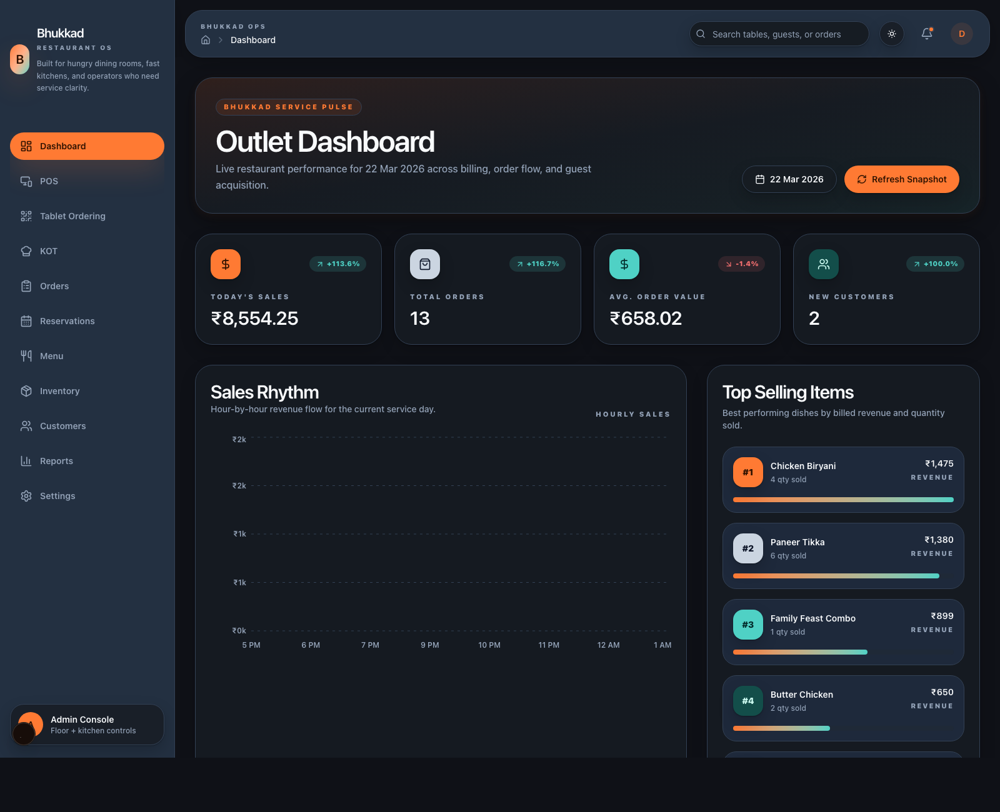
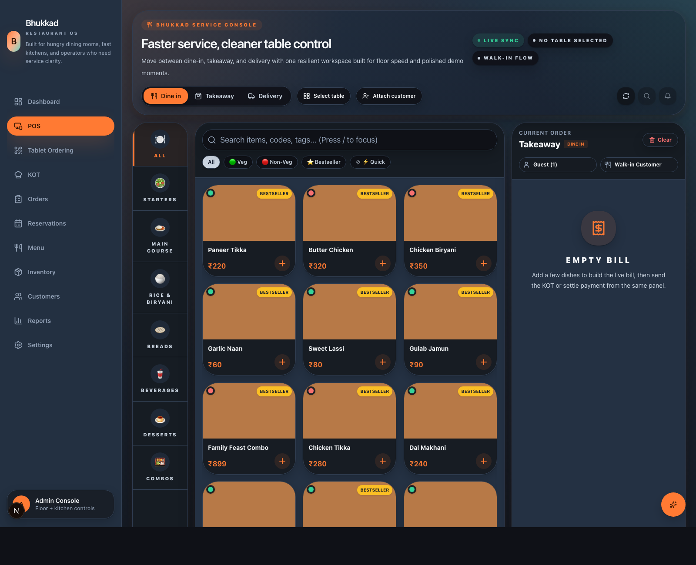
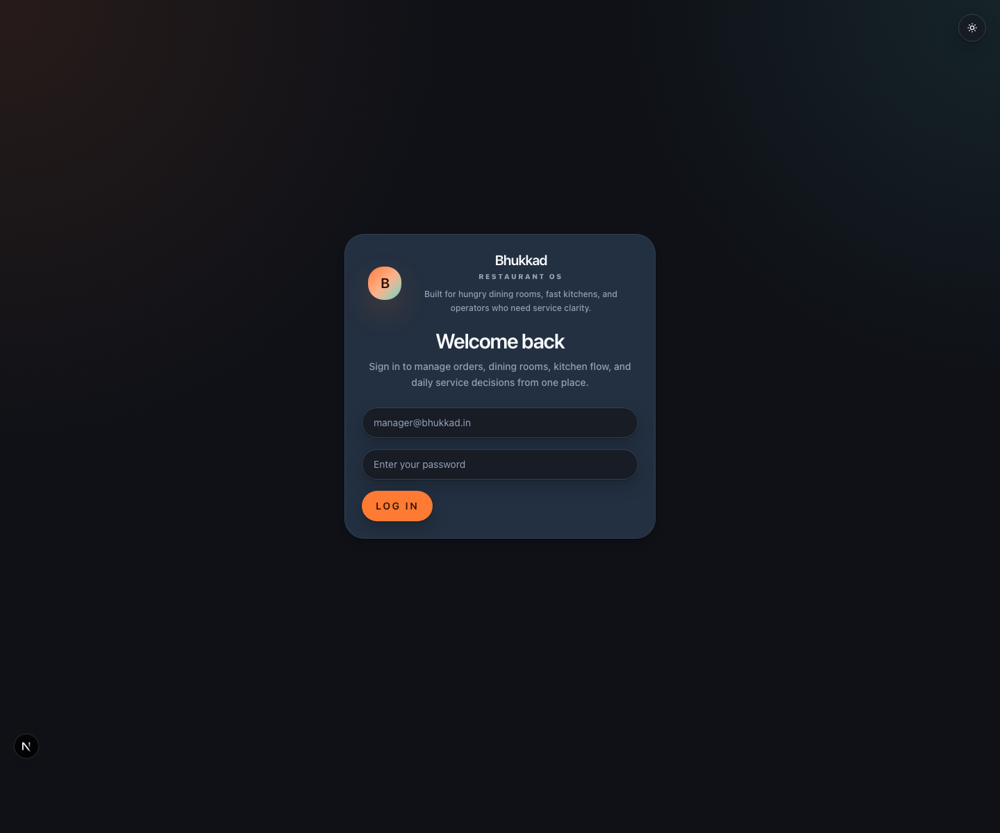

Warm precision
Operational control with hospitality warmth still intact.
Brand Guidelines
A warm, high-velocity identity system for modern dining rooms, kitchen teams, and operators who need service clarity at every touchpoint.

Bhukkad is a restaurant operating system that should feel fast, confident, and hospitality-led without drifting into generic SaaS coldness. The brand sits between the urgency of a live service floor and the calm structure that operators need to make decisions quickly.
The visual system should always read globally polished first. Its Indian influence comes through warmth, spice-toned contrast, menu richness, and tactile surfaces rather than overt motifs or themed decoration.
Operational control with hospitality warmth still intact.
Richer surfaces, stronger contrast, no ornamental excess.
Clear hierarchy, sharp movement, calm under live pressure.
Spice warmth and sensory richness without visual cliches.
Manrope carries the dense product layer: tables, forms, menu metadata, kitchen states, payments, and service detail. It should feel clean, human, and highly readable under pressure.
Hero areas use layered surfaces, controlled glow, and composed typography to help operators process the room without visual noise.
Brand orange leads action. Tertiary teal balances analytics and confirmation. Saturated backgrounds should be rare and purposeful.


